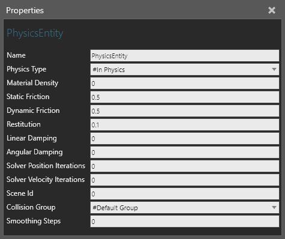

A Physics Entity allows you to define a node in a component as a physical body that is affected by the physics of the 3D world.

| Name | Description |
| Name | Defines the name of the entity. |
| Physics Type | Defines how the entity is affected by physics during simulation.
#In Physics #Out of Physics #Kinematic #In Container |
| Material Density | Defines the density of entity, thereby affecting its mass.
Density is measured in kg/m^3. The system default is 0.2 and is used if value is 0. |
| Static Friction | Defines the static friction of entity as a coefficient for
calculating its frictional force.
Value is between 0 and 1 with a default of 0.5. This is used when entity and the object it is touching are not moving relative to one another. |
| Dynamic Friction | Defines the dynamic (kinetic) friction of entity as a coefficient
for calculating its frictional force.
Value is between 0 and 1 with a default of 0.5. This is used when entity and/or object it is touching are moving relative to one another. |
| Restitution | Defines the bounciness of entity as a factor for its speed
before and after colliding with another object.
Value is between 0 and 1 with a default of 0.1. A value of 1 is very bouncy (elastic collision). A value less than 1 is less bouncy (inelastic collision). |
| Linear Damping | Defines the linear damping of entity as a coefficient for calculating
its resistance to linear motion.
Value is between 0 and 1 with a default of 0. |
| Angular Damping | Defines the angular damping of entity as a coefficient for calculating its resistance to rotational motion. |
| Solver Position Iterations | Defines the number of iterations used for solving position
of entity.
The system default is 4 and is used if value is 0. |
| Solver Velocity Iterations | Defines the number of iterations used for solving velocity
of entity.
The system default is 1 and is used if value is 0. |
| Scene Id | Defines the id of scene the entity belongs to in 3D world.
By default, all entities and the floor of 3D world have a scene id of 0. A scene in this context is abstract and more or less a layer. Entities in different scenes will not collide with one another. |
| Collision Group | Limits the collision of entity with other objects to those belonging to the same group. |
| Smoothing Steps | Defines the number of steps for smoothing the animation of entity, for example when it is moving. |